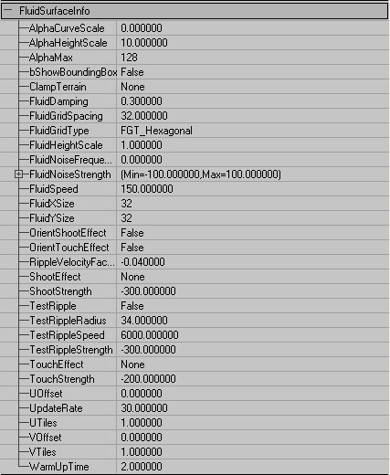

UDN
Search public documentation:
FluidSurfaceTutorialKR
English Translation
日本語訳
Interested in the Unreal Engine?
Visit the Unreal Technology site.
Looking for jobs and company info?
Check out the Epic games site.
Questions about support via UDN?
Contact the UDN Staff
日本語訳
Interested in the Unreal Engine?
Visit the Unreal Technology site.
Looking for jobs and company info?
Check out the Epic games site.
Questions about support via UDN?
Contact the UDN Staff
유동체 표면 튜토리얼
문서 요약: FluidSurfaceInfo? 설정에 대한 안내 및 참조. 문서 변경 내역: 최종 편집 James Golding.개요
빌드 927에는 단순한 유동체 표면 그리드 시뮬레이터 효과가 있습니다. 이 문서는 이것을 사용하는 방법에 대한 짤막한 개관입니다.시작하기
먼저 유동체를 넣을 구멍을 만드십시오. FluidSurfaceInfo는 언제나 세계의 X와 Y를 따라 직사각형입니다 (이것은 회전할 수 없습니다). 현재로서는 유동체 표면을 위한 LOD가 없으므로, 이것은 오직 사실 작은 풀 등에 적합할 뿐입니다. 제가 만든 비어있는 풀은 다움과 같은 모습입니다:
FluidSurfaceInfo의 작성
Actor 브라우저에서 Info 밑에 있는 FluidSurfaceInfo 클래스를 찾으십시오: 이 클래스를 선택하고, 비어있는 풀을 오른 클릭한 다음, 'Add FluidSurfaceInfo Here(이곳에 FluidSurfaceInfo? 추가)'를 선택하십시오. 기본 설정을 사용하여 유동체 표면이 만들어질 것입니다. 이것은 그리드 간격이 32 Unreal 단위인, 6각형의 32x32 메쉬 그리드입니다. 유동체 표면 액터를 더블 클릭하면 속성창이 나타납니다. 기본 속성들은 아래와 같습니다:
이 클래스를 선택하고, 비어있는 풀을 오른 클릭한 다음, 'Add FluidSurfaceInfo Here(이곳에 FluidSurfaceInfo? 추가)'를 선택하십시오. 기본 설정을 사용하여 유동체 표면이 만들어질 것입니다. 이것은 그리드 간격이 32 Unreal 단위인, 6각형의 32x32 메쉬 그리드입니다. 유동체 표면 액터를 더블 클릭하면 속성창이 나타납니다. 기본 속성들은 아래와 같습니다:

유동체 표면 구성하기
다음은 위 옵션들의 뜻에 대한 간략한 설명입니다. 이 중의 일부는 나중에 자세히 설명됩니다.| AlphaCurveScale | 정점에서의 유동체 굴곡과 같은 정점에서의 결과 알파의 비율. |
| AlphaHeightScale | 정점에서의 유동체 높이와 같은 정점에서의 결과 알파의 비율. 굴곡에 의한 알파와 합산됨. |
| AlphaMax | 유동체 정점의 최대 알파. |
| bShowBoundingBox | 물의 경계 박스를 표시함. |
| ClampTerrain | 유동체 정점을 ‘클램프’할 때의 점검 대상 영역. |
| FluidDamping | 물결이 소멸되는 속도. 0에서 1 사이로 유지하십시오. |
| FluidGridSpacing | 유동체 정점들 사이의 거리. 정점의 수를 바꾸지 않고 표면의 크기를 변경함. |
| FluidGridType | FGT_Hexagonal 또는 FGT_Square. Hex가 보기에는 더 낫지만 약간 더 느립니다. |
| FluidHeightScale | 물결의 높이에 대한 최종 조정 요인. |
| FluidNoiseFrequency | 임의의 장소에서, 1 초당 소음 플링의 횟수. 50 정도로 시도 하십시오. |
| FluidNoiseStrength | 소음 플링 강도의 분배. |
| FluidSpeed | 물결이 물을 가로지르는 속도. 이 값을 낮추면 유동체가 더 매끄럽게 보입니다. |
| FluidXSize | X 방향의 정점 수. 2의 제곱으로, 256 보다 크지 않아야 합니다. |
| FluidYSize | Y방향의 정점 수. 2의 제곱으로, 256 보다 크지 않아야 합니다. |
| OrientShootEffect | ShootEffect를 스폰할 때, 발사 방향으로의 방위. |
| OrientTouchEffect | TouchEffect를 스폰할 때, 접촉하는 액터의 속도 방향으로의 방위. |
| RippleVelocityFactor | 물을 통해 이동하는 액터의 속도와 잔물결이 만들어지는 강도의 비율. |
| ShootEffect | 유동체 표면이 저격되었을 때 스폰할 효과. |
| ShootStrength | 물이 저격되었을 때 플링의 세기. |
| TestRipple | 물이 어떻게 보이는지 확인하도록 풀 주위를 이동하는 잔물결을 유효화 (Editor에서만). |
| TestRippleRadius | TestRipple?의 반경. |
| TestRippleSpeed | TestRipple?이 표면 주위를 이동하는 속도. |
| TestRippleStrength | TestRipple?의 세기. |
| TouchEffect | 유동체 표면이 다른 액터에 의해 건드려졌을 때 스폰할 효과. |
| TouchStrength | 액터가 처음으로 물을 건드릴 때 생성되는 플링의 세기. |
| UOffset | X 방향에서의 텍스처 좌표 오프셋. |
| UpdateRate | 유동체 표면 시뮬레이션이 업데이트되는 속도. 표면이 변덕스러운 듯하면 수치를 올리십시오. 보통 60Hz 이하가 요구됩니다. |
| UTiles | X 방향으로 텍스처를 반복하는 횟수. |
| VOffset | Y 방향에서의 텍스처 좌표 오프셋. |
| VTiles | Y 방향으로 텍스처를 반복하는 횟수. |
| WarmUpTime | 물이 처음 시작될 때 소음 등을 일으키기 위해 물이 흐르게 하는 시간(초). 보통 2초 정도. |

FluidSurfaceOscillator (유동체 표면 진동기)
표면 전체에 주위 잔물결을 생성하는 대신, 일정한 위치에 물결이 일어나게 할 수도 있습니다. 이를 위해서는 FluidSurfaceOscillator 액터를 사용합니다. 이것은 Actor 브라우저의 Actor 아래에 있습니다: 다음은 FluidSurfaceOscillator의 속성들입니다:
다음은 FluidSurfaceOscillator의 속성들입니다:

| FluidInfo | 물결을 첨가할 FluidSurfaceInfo. |
| Frequency | 진동기의 진동수 (초당 회전수). |
| Phase | 다른 진동기들의 위상을 오프셋할 수 있도록 함. |
| Radius | 영향을 미칠 유동체의 반경. |
| Strength | 물결의 크기. |

정점 '클램핑'
위의 그림에서 보면, 진동기로부터 나온 물결들이 약간 도드라진 영역을 통과합니다. 이것은 그다지 사실적으로 보이지 않습니다. 물결들이 풀의 실제적 경계에 부딪쳐 반사되지도 않습니다. 이 문제를 수정하기 위해서는 FluidSurfaceInfo 의 'ClampTerrain' 속성을 사용합니다. 유동체 표면의 속성에서 ClampTerrain을 클릭하고, Find를 클릭한 다음 유동체를 둘러싸고 있는 영역을 클릭합니다. 그리고 나서 Rebuild All(모두 재빌드)하면 물이 ‘클램프된’ 정보로 업데이트 됩니다. 유동체 표면은 지정된 영역의 밑면 또는 블로킹 볼륨 내에 있는 정점들을 모두 0으로 클램프하게 됩니다. 이것은 물결들이 그 정점들을 통과하는 것을 중지시키며, 그 대신 물결들이 반사됩니다. 이제 풀은 다음과 같이 보입니다: 물결들이 어떻게 도드라진 땅위를 통과하지 않는지 보십시오. 주: 유동체의 크기/위치 등을 변경하면 클램핑 정보를 제빌드 해야 합니다.
물결들이 어떻게 도드라진 땅위를 통과하지 않는지 보십시오. 주: 유동체의 크기/위치 등을 변경하면 클램핑 정보를 제빌드 해야 합니다.
표면 알파
각 표면 정점의 알파 값은 다음과 같이 산출됩니다: VertexAlpha = MIN(AlphaMax, (Curvature * AlphaCurveScale) + (Height * AlphaHeightScale)) 이 알파값을, 예를 들면, 물에서 대부분의 물결을 가지고 있는 거품같은 텍스처에서 블렌드하는데 사용할 수 있습니다.유동체 표면의 구멍
직사각형의 유동체 표면에 구멍을 만드는 가장 쉬운 방법은 특정 opacity mask를 가진 소재를 사용하는 것입니다. 이것을 풀의 가장자리에서 물이 차차 약해지게 하는데 사용할 수도 있습니다. 한 예로 UT2003의 맵 DM-Antalus에 있는 풀을 참고하십시오.유동체 표면과의 상호작용
게임에서 다른 액터들이 유동체와 상호작용 하는데는 2가지 방법이 있습니다.- Shooting. 기본으로, 물결들은 총을 맞은 지점에서 ShootStrength에서 지정된 강도로 스폰되도록 설정되어 있습니다. ShootEffect에서 지정한 클래스의 효과도 그 위치에서 스폰됩니다.
- Toucing. Actor가 물을 건드려서 잔물결이 일어나도록 하려면, 그 액터의 bDisturbFluidSurface 플래그가 true로 설정되어야 합니다. 액터는 그것이 처음 물을 건드린 지점에서 최초의 물결을 만들어 냅니다(ShootStrength/Effect와 같은 방법으로 지정된 TouchStrength/Effect). 그 다음에는, 액터가 물 위에서 이동하는 속도를 바탕으로 잔물결이 생성됩니다. 액터의 수평 속도와 잔물결 세기의 비율을 조정하는데는 RippleVelocityFactor가 사용됩니다. 만들어진 잔물결의 반경은 액터의 충돌 반경으로부터 취해집니다.